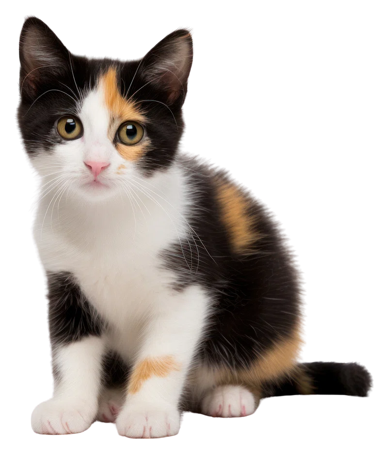

El Dia Internacional del Gat se celebra este 20 de febrer en homenatge a la defunció de' Socks', el gat de la família Clinton, que va viure en la Casa Blanca des de 1993 fins al 2009. 'Socks' va morir un 20 de febrer i va anar aleshores quan el Fons Internacional per al Benestar dels Animals i altres associacions van decidir convertir esta data especialment. Es tracta d'una jornada per a reconéixer i defendre els drets d'estos animals davant els abusos i abandons que patixen diàriament, així com conscienciar a la població mundial de la importància de la seua cura i manteniment.
